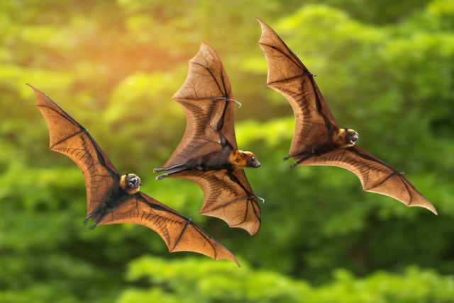
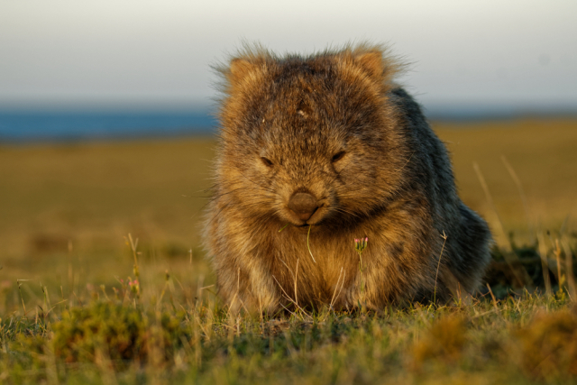

Мир животных бесконечно увлекателен и разнообразен.
Представляем вашему вниманию пять интересных фактов о братьях наших меньших,
о которых вы могли еще не слышать.
У некоторых рыб, земноводных и рептилий есть так называемый «третий глаз»,
который помогает им чувствовать интенсивность света
Исследования показывают,
что коровы чувствуют магнитное поле Земли и предпочитают выравнивать свое тело вдоль его силовых линий во время отдыха.
Это подтвердил анализ фотографий со спутников.
Летучая мышь является единственным млекопитающим, способным летать.
Старейшее животное на Земле — 192-летняя черепаха Джонатан.
Она появилась на свет примерно в 1832 году и проживает на о. Святой Елены.
Вомбаты складывают свои испражнения (имеющие форму кирпичиков) в кучки, чтобы отмечать границы своей территории.
А вам известны подобные факты о живой природе? Поделитесь ею.